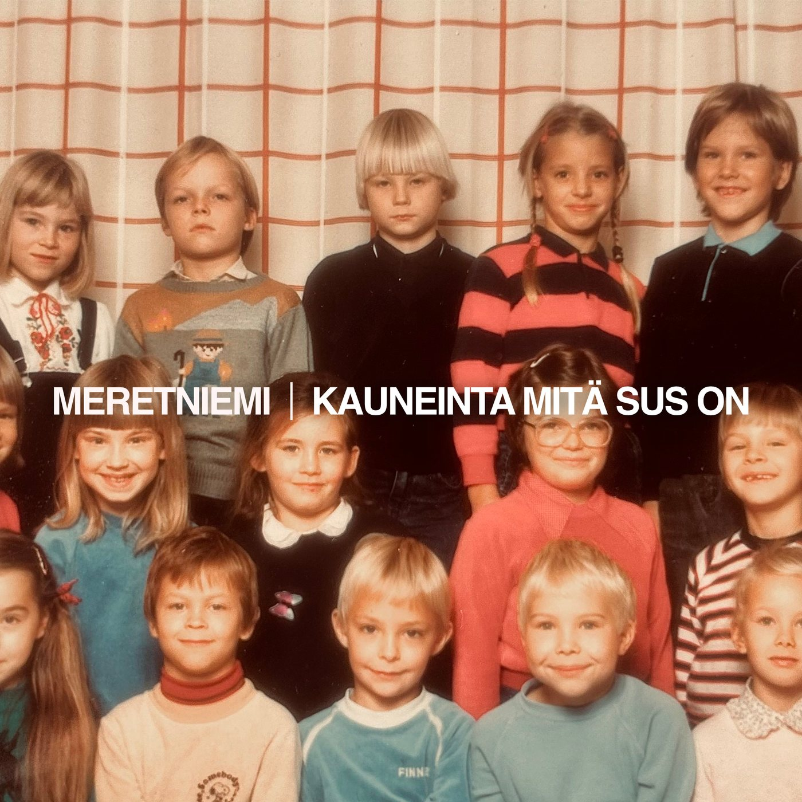

Oo se valo mitä muut ei nää
Ei loista kirkkaammin tähdetkään
Se mitä piilotat muilta
on kauneinta mitä sus on

Esikoissingle
Kauneinta mitä sus on
Tunnistatko itsesi tai jonkun tuttusi biisistä?
Käytätkö jotain muuta palvelua? Kuuntele omassa palvelussasi
Mistä laulu syntyi
Olin tehnyt lauluja yhdessä tuottaja Jukka Jahnukaisen kanssa useamman vuoden. Mutta tämä oli ensimmäinen sessio kun istuttiin alas kirjoittamaan nimenomaan mulle.
Päivän päätteeksi tajuttiin että se olikin lohtulaulu: kertoja puhuu ihmiselle, joka piilottaa kauneimpia puoliaan toisilta – ja jopa itseltään.
Se ei heti tuntunut mun omalta kappaleelta vaan joltain, joka sopisi Juha Tapiolle tai Samuli Edelmannille. Niin se päätyikin harkintaan Samulin levyprojektiin.
Mutta parin kuukauden jälkeen, kuunneltuani biisin eri versioita satoja kertoja, se alkoi tuntua henkilökohtaiselta. Tajusin että mähän laulan siinä rohkaisuksi itselleni. Niin nappasin biisin takaisin mulle. Läheltä piti 😅
Sanat
Sul on tarttuva nauru
Mä oon kuullu sen joskus
Mut sä kätket sen
Sul on surulliset silmät
Mut et vastaa ku kysyn
Vaan sä kätket sen
Voi kun et himmentäisi enää
tota loistoa sussa
Ei sinivuokkokaan voi elää
terälehdet nupussa
Oo se valo mitä muut ei nää
Ei loista kirkkaammin tähdetkään
Se mitä piilotat muilta
on kauneinta mitä sus on
Oo se valo mitä muut ei nää
Sut on luotu niin kimmeltämään
Se mitä piilotat muilta
on kauneinta mitä sus on
Annat hölmöjen puhuu
sul ois fiksumpaa juttuu
Mut sä kätket sen
Vaik mä nään että pelkäät
Sanot kaikki on ok
Miks sä kätket sen
Voi kun et himmentäisi enää
tota loistoa sussa
Ei sinivuokkokaan voi elää
terälehdet nupussa
Oo se valo mitä muut ei nää
Ei loista kirkkaammin tähdetkään
Se mitä piilotat muilta
on kauneinta mitä sus on
Oo se valo mitä muut ei nää
Sut on luotu niin kimmeltämään
Se mitä piilotat muilta
on kauneinta mitä sus on
Vaikka susta just nyt pieneltä tuntuu
Ja luulet että muil on jotain mitä sult puuttuu
Pienen kukan voimast asfalttiki murtuu
Sävellys ja sanat Jukka Jahnukainen, Jarkko Meretniemi
Tuotanto ja miksaus Jukka Jahnukainen
Masterointi Henkka Niemistö
Julkaisija Has Been Records
Tuliko joku mieleen?
Tämä on lohtulaulu. Ehkä joku tarvitsee sen tänään.